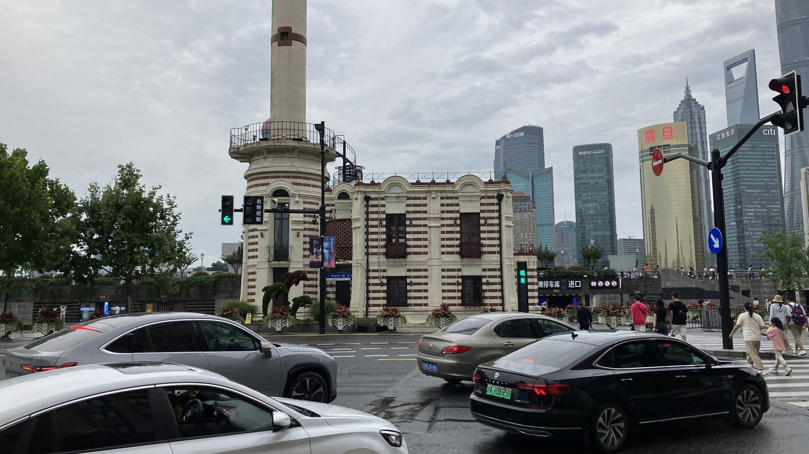
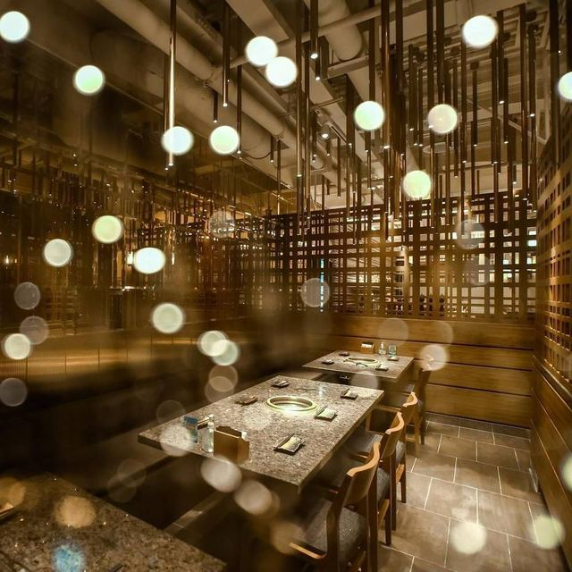

The Bund (old International Settlement waterfront) and the reopened Bund Signal Tower 外滩 与 外滩信号台
Historic riverfront · Huangpu
CheckedTower hours confirmed · 18 Nov 2026


Walk north from the Signal Tower, reopened in October 2026. Promenade and tower are free; tower shuts 21:30.
Why it matters
After the First Opium War Shanghai became a treaty port (1842-43). The British settlement of 1845 and the American one merged into the International Settlement in 1863, and its riverfront became the Bund. By the 1920s it was East Asia's financial street; the HSBC Building (1923) and Custom House (1927) are its symbols.
What to see
Bund Signal Tower: floor 1 visitor centre, Bund history exhibition and shop; floor 2 cafe with river views. Then walk north past the HSBC Building, Custom House and Peace Hotel to Waibaidu Bridge (1908).
How to get there
Taxi: show 外滩, or 黄浦区中山东二路1号甲 for the tower. Metro Line 10 to East Nanjing Road or Yuyuan Garden. Start at the tower and walk north.
Local tip
The tower reopened in October 2026: a fresh first stop. From the north end, Waibaidu Bridge leads into Hongkou, where the Jewish Refugees Museum is (distance not checked).
Address notes
Signal Tower: 1A Zhongshan East 2nd Road, at the south end. Former HSBC Building: 12 Zhongshan East 1st Road.
Watch out
Tower sources differ: first station 1883 or 1884 (English Wikipedia: a French one in 1865); signalling ended 1956 or Feb 1957. The 'No dogs and Chinese' sign is a legend; the Huangpu Park sign had ten rules, rule 1 reserving it for foreigners.
Did you know
In 1993 the Bund Signal Tower, a reinforced-concrete tower of about 45 to 50 m built in 1907, was moved 22.4 m toward the river in one piece, only a few centimetres a day, for road widening.
A tower that size was inched along without being taken down, and since October 2026 you can go inside: history display below, coffee room above.
Caveat and sources
Reopening reported by Guangming Daily (18 Oct 2026), which gives no hours or price. 10:00-22:00 comes from two ifeng self-media posts of 19 Oct that relay a bureau list: check on arrival. Ticket price and booking rules were not found, probably free: check at the door. Height is 45 m (China Daily) or nearly 50 m (2026 reports).
What was checked, and what was not
Read on 18 Nov 2026
Guangming Daily (18 Oct 2026) confirms the tower reopened after conservation, floors 1 and 2 only. The Bund's treaty-port history, HSBC (1923) and Custom House (1927) dates match Wikipedia. A 30 Mar 2026 guide gives the 24-hour promenade. The tourism bureau portal's report of 24 Oct 2026 (hours, free entry, on-site reservation) was read 18 Nov 2026.
Not checked
How the on-site reservation works at the Signal Tower; HSBC lobby access in 2026; whether the Bund History Museum or Custom House interior admit visitors. Times are map estimates.
Sources
- Guangming Daily (18 Oct 2026)m.gmw.cn Opens in a new tab
- Shanghai Culture and Tourism Bureau portal (Leyou Shanghai, 24 Oct 2026): Signal Tower free entry, hoursmeet-in-shanghai.net Opens in a new tab
- Chinavigators: free things to do in Shanghai (30 Mar 2026)chinavigators.com Opens in a new tab
- Wikipedia: The Bunden.wikipedia.org Opens in a new tab
Nearby
POP on the Bund POP露台餐厅与酒吧
Checked

Kanpai Classic 老乾杯（外滩店）
Checked